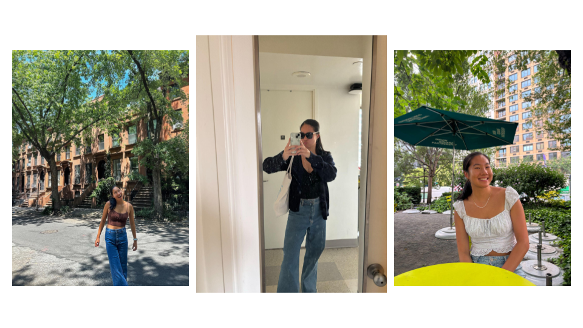

student @ carnegie mellon university
learn more
↓My name is Stephanie, and I am from Mendham, New Jersey! I am currently an undergraduate senior at Carnegie Mellon University majoring in Cognitive Science and Human-Computer Interaction. This is my personal website, but you can also find projects and my passions on here! I hope you enjoy reading!
about me
Humans are producing more data than ever nowadays, and with all of this new information,
what is the best way we can actually make sense of it? How can we understand how our minds
perceive, learn, reason, and interact with the world? How do we represent concepts that we
are so familiar with today? It is not what humans simply know, but more of
how we come to know it.
From recognizing a face from years and years ago, to understanding language,
to making seemingly instinctive decisions, every ordinary aspect of our lives
involve the most complex cognitive processes.
So frequently do I get the question of "so what even are you studying?" and it's a completely fair question.
I didn't even know the implications of the field until my junior year of college. It is an interdisciplinary
field that studies intelligence in both humans and artifical systems. Integrating persepctives from psychology,
neuroscience, computer science, linguistics, and philosophy, we work to understand human cognition in all aspects.
Not only does it help us understand ourselves more, but it also provides a foundation for developing technologies that
can learn from, adapt to, and interact with those who use them.
Because Cognitive Science is such a broad area, it is important for me to narrow it down to a few
sub-domains that I am passionate about.
As a data scientist, I work with complex and messy
datasets to represent and visualize them in the most effective way. Data visualization
is not just a technical challenge, but also a design problem. How do we showcase something that is intuitive
for the human brain? I want to build digital experiences that leverage this visual processing, while also offering
value to whoever is using it. That is where the crux of product design comes from, and what I am focusing on in my
Human-Computer Interaction additional major.